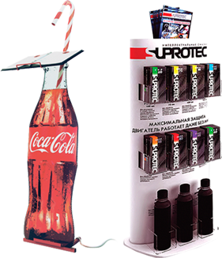
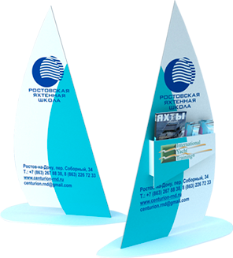
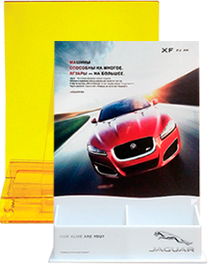
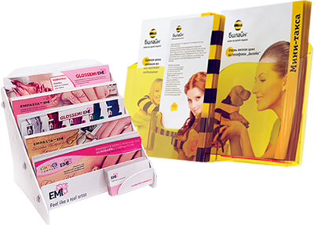
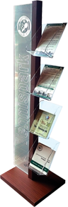
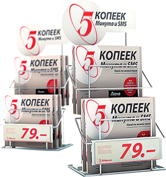
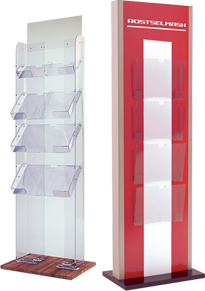
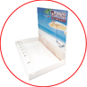

ОФОРМЛЕНИЕ МЕСТ ПРОДАЖ
ТОРГОВЫЕ СТОЙКИ
Ни одна современная точка продаж не может обойтись без функционального и надежного торгово-сервисного оборудования. Торговые стойки, демонстраторы, экспозиторы, дисплеи, позволяющие оптимально использовать пространство торговой площади и демонстрирующие «товар лицом» — одни из самых незаменимых и распространенных P.O.S. материалов
Основные назначение торговых стоек и стоек-дисплеев—организация пространства точки продаж, наглядная демонстрация и удобная выдача продукции покупателю. Также важны рекламные и информирующие функция торговых стоек, обеспечивающие удобный поиск и выделяющая товар из массы аналогичной конкурирующей продукции. Промостойки выполняют рекламную и информирующую функцию.
Компания «Восток-Запад» имеет многолетний опыт разработки и производства торгово-сервисных стоек. В своих разработках мы используем пластики, алюминиевые композиты, стекло, металл, дерево, ЛДСП, МДФ; применяем технологии 3-д фрезерования, лазерной резки и гравировки, вакуумной формовки, трафаретной печати и прямой УФ печати на твердых поверхностях.


Торговые стойки из ЛДСП, МДФ
Безкаркасные стойки, собранные на мебельных стяжках. Широкая палитра расцветок поверхности ЛДСП. Такие стойки обычно изготавливаются полностью разборными, что делает удобным их хранение и транспортировку. Нанесение изображений на поверхности производится прямой УФ печатью, прикаткой полноцветного иображения, пластификацией или финиловой аппликацией.
Дисплеи.
Стойки «парус»
Дисплеи стойки “ПАРУС”
Стойки такого типа обычно применяются для выкладки печатной продукции или малогабаритных товаров. «Паруса», как правило, оснащены не полками, а карманами из оргстекла или металлического прута, или крючками для подвеса продукции. Каркасы таких стоек, обычно складные или разборные, изготавливаются из металлической профильной трубы или толстых ПВХ пластиков. Фасады стоек — пластик, префорированный металлический лист, оргстекло.
Нестандартные решения
- 
-

- 
Нестанданртные решения
Совершенно не обязательно привязываться к привычным технологиям и стандартным ходам в изготовлении торгово-сервисного оборудования. Новые материалы и неординарные решения способны значительно расширить функционал POS материалов и улучшить их внешний вид.
ПОДСТАВКИ ДЛЯ ПОЛИГРАФИИ
Универсальный маркетинговый инструмент – стойки для рекламы или информационных сообщений. Как правило, это компактные сборные конструкции, которые можно без проблем перемещать с места на место. В нашем ассортименте представлено и новое поколение информационных стоек под мультимедийные устройства. Такие конструкции могут быть не только мобильными, но и стационарными, например, прикрепленными к стене.
Компания Восток-Запад производит качественные информационные и рекламные стойки из акрила, пластика и металла.
В нашем каталоге можно подобрать варианты в соответствии с разными потребностями: легкие и недорогие конструкции с рамками под двусторонний бумажный вкладыш; стильные и надежные информационные стойки для создания планшетных киосков и терминалов; функциональные изделия с лотками под листовки или каталоги, с карманами, с держателями под баннер; эффектные световые модели. Многие рекламные стойки можно изготовить как с горизонтальными, так и с вертикальными рамками. Также есть возможность выбрать другие размеры составных частей, заказать оформление изделий. Если вам нужны оригинальные информационные стойки – нестандартной формы, габаритов и комплектации, мы готовы выполнить их для вас на базе имеющихся модулей или по эксклюзивному дизайн-проекту.
-

- 
- 
- 
- 
- 
-

-

ДИСПЕНСЕРЫ
Для размещения множества мелких товаров на витрине используются специальные дозирующие конструкции – так называемые диспенсеры. Такие конструкции удобны и практичны – но это не единственное их преимущество. Применение диспенсеров для оформления витрин – это отличный маркетинговый ход, направленный на повышение привлекательности товара и способствующий росту продаж.
В зависимости от принципа работы и конструктивных особенностей диспенсеры подразделяются на две категории:
Дозирующий диспенсер предназначен для размещения товара насыпью и удобного дозирования мелкой продукции. Конструкция оснащается проемом, через который покупатель берет товар. Проем может быть открыт или закрыт заслонкой/дверцей. Диспенсер для сыпучих оснащается лопаткой. Загрузка товаров в дозатор осуществляется через крышку, расположенную в верхней части конструкции.
Диспенсер-органайзер. Мелкие штучные товары размещаются не навалом, а в отдельных ячейках. Конструкция позволяет упорядочить большое количество предметов, расположить их в наиболее привлекательном виде. Диспенсеры такого типа могут иметь любое количество ячеек различной формы (круглые, овальные, квадратные, треугольные, прямоугольные).
Дозирующие устройства используются
для размещения следующих товаров:
-
Конфет и других мелких кондитерских изделий
-
Сувенирной продукции
-
Бижутерии
-
Канцелярских товров
-
Сигарет
-
Снеков, сыпучих продуктов
-
Медицинских материалов - бахил, перчаток, салфеток, полотенец, лекарственных препаратов в аптеках
-
Напитков
ДЕЛИТЕЛИ ПОЛОК
Системы организации полочного пространства (пластиковые полочные делители товара, задние опоры для товара, пружинные толкатели) уже стали стандартом оформления современных магазинов. Обеспечивая идеальную выкладку товара и порядок на полке, они минимизируют затраты розничных сетей на персонал в торговом зале, делят товар на полке, помогают легко выявить проданные позиции, снижают уровень потерь от просроченного товара.
Широкий выбор полочных разделителей разных высот, длин и типов позволяет оптимально и с минимальными затратами укомплектовать полки для получения максимального роста продаж и снижения затрат. Нами накоплен большой опыт использования полочных разделителей в магазинах разных типов и мы будем рады помочь подобрать лучшую комплектацию полочных разделителей, пружинных толкателей, ценникодержателей или других пос материалов для вашей задачи.
Полочные разделители и системы подачи товара к краю полки, представленные в этом разделе, обеспечивают идеальный порядок на полке и упорядоченную выкладку товара даже часы пик. Широкий выбор в нашем каталоге позволяет подобрать решение для продуктов разной высоты и полок самых разных размеров.
ЦЕННИКОДЕРЖАТЕЛИ
-
Стеллажные

-
На подставке

-
На зажимах

-
Навесные

ВОБЛЕРЫ. СТОППЕРЫ
Слово «воблер» пришло к нам от английского глагола «wobble» , которое означает «колебаться, трястись, дрожать». Этот термин прочно вошел в слэнг рекламного рынка и стал использоваться для обозначения POSматериала, имеющего небольшой размер и привлекательный дизайн, который крепится к любой поверхности незаметной пластиковой лентой при помощи двустороннего скотча. Основное распространение рекламные воблеры получили в местах розничной торговли. По мнению психологов, именно яркая картинка, которая постоянно находится в движении, привлекает к себе особое внимание и отлично сохраняется в подсознании потенциальных покупателей.
Воблеры представляют представляет собой мини-подвеску, которая закрепляется в любом удобном месте прилавка, кассы, стены, стеллажа или ограждения с помощью удобной гибкой ножки. Двусторонний скотч прекрасно поддерживает красочную картинку, которая колышется под потоками воздуха и привлекает внимание клиента. Сегодня воблеры чаще всего применяются в сочетании с другими видами POS продукции.
Область применения воблеров настолько огромна, что вы можете встретить их в ресторанах и кафе, сетевых предприятиях общепита, на рынках, в магазинах, в банках и страховых компаниях, в салонах связи, на объектах уличной торговли, даже на вокзалах и у железнодорожных касс.
МОБАЙЛЫ
Мобайлы - POS -материал, состоящий из плоского или объемного рекламного изображения, подвешенного к потолку с помощью специальной подвесной системы. Наиболее часто встречаются прямоугольные и фигурные мобайлы, которые изготавливаются из картона. Это может быть плакат на жесткой основе, муляж упаковки или самого товара, но главное преимущество мобайла - это то, что он заметен издалека и не занимает много места в торговом зале. Несмотря на простоту и избитость, мобайлы как рекламные носители обладают обширным списком преимуществ, которые актуальны в любом магазине:
- простота в изготовлении и доступные цены;
- удобство при монтаже и эксплуатации;
- легковесность конструкции за счет малого веса запечатываемых материалов:
пенокартон, микрогофрокартон, картон, тонкие листовые пластики;
- не требуют специального ухода, хватает влажной уборки;
- долговечность; не выцветают, не теряют красочность на протяжении многих лет;
- четкость и красочность изображений с интерьерным качеством печати 1440 dpi;
- информативность, читаемость, комфортность для восприятия;
-хорошо доносят до посетителей рекламную информацию и позволяют найти требуемое место продаж;
- возможность привлечения внимания за счет разных размеров и вариантов изготовления.
НАКОПИТЕЛИ
В зависимости от особенностей торговой точки, пожеланий заказчика, площади помещения и специфики продукции, дисплеи-накопители могут быть напольными, настольными или подвесными. Высота, ширина, глубина и количество полок также определяются назначением дисплея, параметрами магазина и типом товара. При изготовлении этих конструкций используются прочные износостойкие современные материалы: пластик, металл, в некоторых случаях — закаленное стекло.
-

-

- 